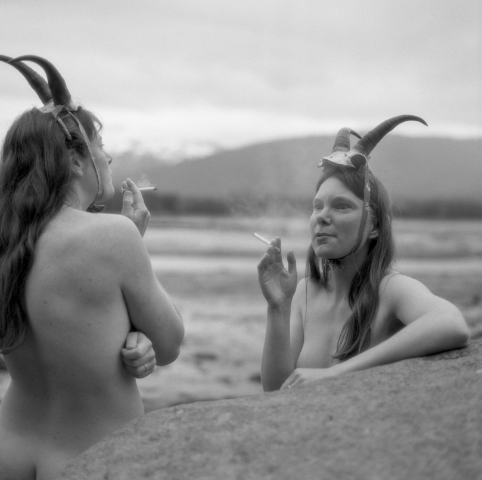

Women of BACKBONE
Woman Made Gallery invites you to experience Women of BACKBONE, a participatory art project spanning nearly 30 years in a rural town in Alaska.
Photographed and directed by Bren Kleinfelder.
Join us for the launch of the Women of BACKBONE Book this Sunday [4/12] from 3 to 5PM.
A discussion between 8 of the featured women, the artist [Bren Kleinfelder], and the curator [Rebekah Baker] will take place and be an opportunity for the public to gather and hear about their experiences, research, and impact over the past 28 years. We will explore topics like bodily autonomy, photography as a tool for agency, community art making, participatory art, and more.
BACKBONE began in Petersburg (Séet Ká), a small island town at the tip of Mitkof Island, where the Wrangell Narrows meets Frederick Sound in the Tongass National Rainforest.
This is Lingit Aaní, the traditional territory of the Lingit people, whose relationship with these waters spans over 20,000 years. Shaped by ancient glaciers, this landscape of fjords, rock-strewn channels, and marine abundance has long provided vital fishing grounds, travel corridors, and cultural lifeways.
The Wrangell Narrows, with its maze of islands and tidal shifts, demands local knowledge to navigate. And just as the geography calls for skill and connection, so does the history. With the arrival of Russian fur traders in the 18th century and Norwegian settlers in the 19th century, the town grew into a commercial fishing community, where the industry continues to shape its pace and identity.
It was here in 1998 that 45 women from this close-knit community gathered to create a series of unclothed portraits—offering not just their images, but their voices, agency, and trust. Revisited in 2002 and again in 2024, the project has become a living archive of resistance, reflection, and place-based art.